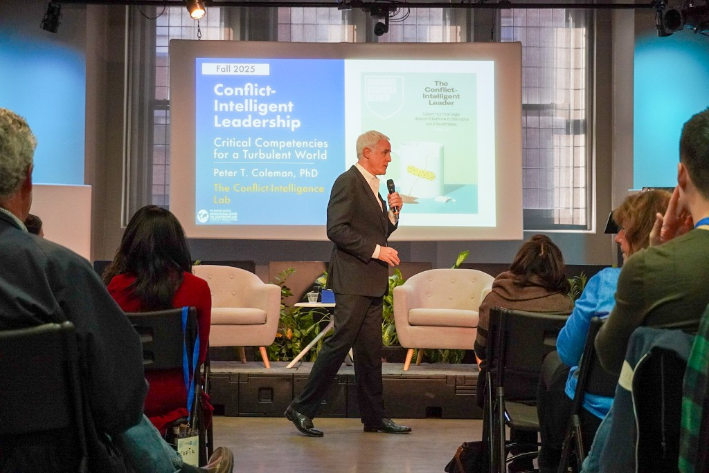

01
Overcoming Toxic Polarization.
How deeply divided organizations, communities, and nations can find the way out.
How deeply divided organizations, communities, and nations can find the way out.
Navigating disagreement up and down your organization using the CIQ framework.
Harnessing the power of disagreement for innovation and better outcomes.
Lessons from the world's most peaceful societies for building lasting stability.
Leveraging multicultural tension for institutional reform and justice.
Each keynote is tailored to the room. Tell us what you need.
Inquire


Communicates global reach and institutional prestige — academic, civic, governmental, and corporate. A representative slice of the past several years.
A starting point for event organizers and producers. Full archive of media appearances available on the Media page.
Available for keynotes, workshops, masterclasses, and longer consulting engagements with universities, corporations, civic institutions, and peacebuilding organizations.